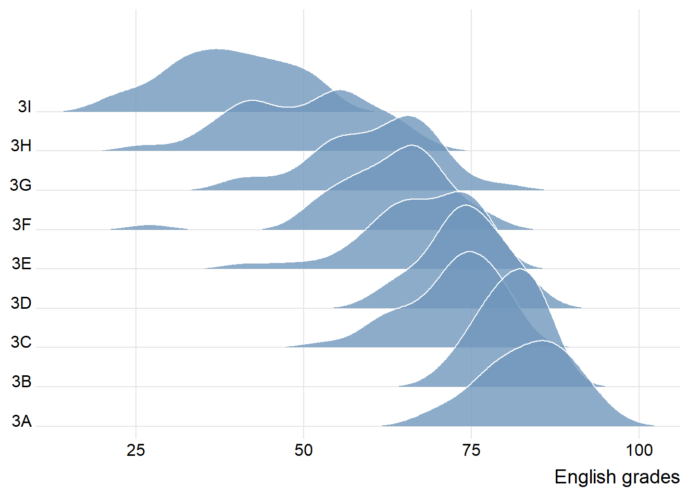

pacman::p_load(tidyverse, ggthemes,
ggridges, ggdist)Hands-on Exercise 4A
9 Visualising Distribution
9.1 Overview and Learning Outcomes
This hands-on exercise is based on Chapter 9 of the R for Visual Analytics book.
Visualising distribution is not new in statistical analysis. Chapter 1 covered some of the popular statistical graphic methods for visualising distribution. They are histogram, probability density curve (pdf), boxplot, notch plot, and violin plot, using the ggplot2 package. Chapter 9 will cover two relatively new statistical graphic methods for visualising distribution. They are ridgeline plot and raincloud plot using the ggplot2 package and its extensions.
9.2 Getting Started
9.2.1 Installing and Loading Required Libraries
In this hands-on exercise, the following R packages are used:
tidyverse (i.e. readr, tidyr, dplyr) for performing data science tasks such as importing, tidying, and wrangling data;
ggthemes for extra themes, geoms, and scales for ggplot2;
ggridges for creating ridgeline plots; and
ggdist for visualising distributions and uncertainty.
The code chunk below uses the p_load() function in the pacman package to check if the packages are installed. If yes, they are then loaded into the R environment. If no, they are installed, then loaded into the R environment.
9.2.2 Importing Data
The dataset for this hands-on exercise is imported into the R environment using the read_csv() function in the readr package and stored as the R object, exam.
exam = read_csv("data/Exam_data.csv")The tibble data frame, exam_data, has 7 columns and 322 rows.
It consists of the year-end examination grades of a cohort of 322 Primary 3 students from a local school.
The 7 variables/attributes are:
Categorical: ID, CLASS, GENDER, and RACE.
Continuous: MATHS, ENGLISH, and SCIENCE.
9.3 Visualising Distribution with Ridgeline Plot
A ridgeline plot (also called joyplot) is a data visualisation technique for revealing the distribution of a numeric value for several groups. Distribution can be represented using histograms or density plots, all aligned to the same horizontal scale and presented with a slight overlap.
Such as plot makes sense when the number of groups to represent is medium to high, and thus, a classic window separation would take up too much space. The overlap of the groups allows for a more efficient use of space.
Also, it works well when there is a clear pattern in the result, like if there is an obvious ranking in groups. Otherwise, the groups will tend to overlap each other, leading to a messy plot that does not provide any insight.
9.3.1 Plotting Ridgeline Graph: ggridggs Method
There are several ways to plot a ridgeline plot with R. The ggridges package has two main geom functions to plot a ridgeline plot: geom_ridgeline() and geom_density_ridges(). The former takes height values directly to draw the ridgelines, and the latter first estimates data densities and then draws those using ridgelines.
In the plot below, a ridgeline plot below is plotted using the geom_density_ridges() function.

ggplot(exam,
aes(x = ENGLISH,
y = CLASS)) +
geom_density_ridges(
scale = 3,
rel_min_height = 0.01,
bandwidth = 3.4,
fill = "#7097BB",
alpha = 0.8,
color = "white"
) +
scale_x_continuous(
name = "English grades",
expand = c(0, 0)
) +
scale_y_discrete(name = NULL, expand = expansion(add = c(0.2, 2.6))) +
theme_ridges()9.3.2 Varying Fill Colours Along the x-axis
The area under a ridgeline plot can be filled with colours that vary along the x axis. This effect can be achieved by using either the geom_ridgeline_gradient() or geom_density_ridges_gradient() functions. Both geom functions work just like geom_ridgeline() and geom_density_ridges(), except that they allow for varying fill colors. However, they do not allow for the alpha argument for transparency in the fill.

ggplot(exam,
aes(x = ENGLISH,
y = CLASS,
fill = stat(x))) +
geom_density_ridges_gradient(
scale = 3,
rel_min_height = 0.01) +
scale_fill_viridis_c(name = "Temp. [F]",
option = "C") +
scale_x_continuous(
name = "English grades",
expand = c(0, 0)
) +
scale_y_discrete(name = NULL, expand = expansion(add = c(0.2, 2.6))) +
theme_ridges()9.3.3 Mapping Probabilities Directly Onto Colour
Beside providing additional geom objects to support the need to plot a ridgeline plot, the ggridges package also provides a statistic function, stat_density_ridges(), that replaces the stat_density() function in the ggplot2 package.
The plot below uses the stat(ecdf) function to calculate the probabilities representing the empirical cumulative function for the distribution of scores.
Note: It is important to set the argument “calc_ecdf” as TRUE in the
stat_density_ridges()function.

ggplot(exam,
aes(x = ENGLISH,
y = CLASS,
fill = 0.5 - abs(0.5-stat(ecdf)))) +
stat_density_ridges(geom = "density_ridges_gradient",
calc_ecdf = TRUE) +
scale_fill_viridis_c(name = "Tail probability",
direction = -1) +
theme_ridges()9.3.4 Ridgeline Plots with Quantile Lines
A ridgeline plot that assigns different colours to different quantiles can be plotted using the geom_density_ridges_gradient() function, and stating the the stat(quantile) as an aesthetic argument.

ggplot(exam,
aes(x = ENGLISH,
y = CLASS,
fill = factor(stat(quantile))
)) +
stat_density_ridges(
geom = "density_ridges_gradient",
calc_ecdf = TRUE,
quantiles = 4,
quantile_lines = TRUE) +
scale_fill_viridis_d(name = "Quartiles") +
theme_ridges()Instead of using a number to define the number of quantiles, cut-off points (e.g., 2.5% and 97.5% tails) can also be used to colour a ridgeline plot.

ggplot(exam,
aes(x = ENGLISH,
y = CLASS,
fill = factor(stat(quantile))
)) +
stat_density_ridges(
geom = "density_ridges_gradient",
calc_ecdf = TRUE,
quantiles = c(0.025, 0.975)
) +
scale_fill_manual(
name = "Probability",
values = c("#FF0000A0", "#A0A0A0A0", "#0000FFA0"),
labels = c("(0, 0.025]", "(0.025, 0.975]", "(0.975, 1]")
) +
theme_ridges()9.4 Visualising Distribution with Raincloud Plot
A raincloud plot is a data visualisation technique that produces a half-density of a distribution plot. It gets the name because the density plot is in the shape of a “raincloud”. The raincloud (half-density) plot enhances the traditional box-plot by highlighting the presence of multiple modalities (an indicator that different groups may exist). A boxplot does not show where densities are clustered, but a raincloud plot does.
The functions from ggdist and ggplot2 packages are used to create a raincloud plot.
9.4.1 Plotting a Half Eye Graph
First, a half-eye plot is plotted using the stat_halfeye() function of the ggdist package.
Note: The slab interval can be removed by setting the “.width” argument to 0 and “point_colour” argument to NA.

ggplot(exam,
aes(x = RACE,
y = ENGLISH)) +
stat_halfeye(adjust = 0.5,
justification = -0.2,
.width = 0,
point_colour = NA)9.4.2 Adding Boxplot with geom_boxplot()
Second, the geom_boxplot() function in the ggplot2 package is used to add a narrow boxplot. The width and opacity are adjusted accordingly.

ggplot(exam,
aes(x = RACE,
y = ENGLISH)) +
stat_halfeye(adjust = 0.5,
justification = -0.2,
.width = 0,
point_colour = NA) +
geom_boxplot(width = .20,
outlier.shape = NA)9.4.3 Adding Dot Plot with stat_dots()
Third, the stat_dots() function in the ggdist package is used to produce a half-dotplot, which is similar to a histogram that indicates the number of samples (number of dots) in each bin.
The “side” argument is set to “left” to place it on the left-hand side.

ggplot(exam,
aes(x = RACE,
y = ENGLISH)) +
stat_halfeye(adjust = 0.5,
justification = -0.2,
.width = 0,
point_colour = NA) +
geom_boxplot(width = .20,
outlier.shape = NA) +
stat_dots(side = "left",
justification = 1.2,
binwidth = .5,
dotsize = 2)9.4.4 Finishing Touch
Last, the coord_flip() function in the ggplot2 package is used to flip the raincloud plot horizontally to give it the raincloud appearance.
The theme_economist() function in the ggthemes package is added to give the raincloud chart a standard professional publishing appearance.

ggplot(exam,
aes(x = RACE,
y = ENGLISH)) +
stat_halfeye(adjust = 0.5,
justification = -0.2,
.width = 0,
point_colour = NA) +
geom_boxplot(width = .20,
outlier.shape = NA) +
stat_dots(side = "left",
justification = 1.2,
binwidth = .5,
dotsize = 1.5) +
coord_flip() +
theme_economist()~~~ End of Hands-on Exercise 4A ~~~